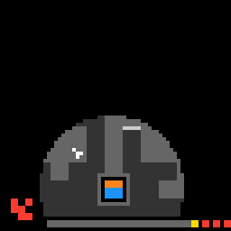

ls20
Walk a block to doors that match your key; walking into the last door clears the level.
7 levels · 21 rules · all levels replayed in Lean
How it plays
The player is a block, and the direction keys make it walk one cell. Each door has a pattern drawn on it, and the key in the player's hand is in the bottom-left corner. Only when the key's shape and colour are both the same as the door's can it walk into the door; walking into the last door clears the level. The key is changed by stepping on things on the ground: a white cross switch makes it turn a right angle clockwise, a white switch of another shape changes it to the next shape, and a coloured small block changes it to the next colour. Every step taken deducts energy, and when the energy bar at the bottom is used up and one steps again, a life is lost (the red block in the bottom-right corner) and the level restarts; a yellow small square is a supply, and walking into it refills the energy. The light-coloured thin strips beside the walls are spring lines, and stopping beside them one gets pushed sliding all the way. On some levels the switches walk back and forth along a fixed path, one cell for each step the player moves; one level has fog, where only a ring around the player can be seen.


Replay
The certified run that cleared every level, one action at a time. Beside each step: the rules of the model that explain it.
Explained by
Keys: ← → step, Space play / pause. A click is circled; cells that changed are outlined.
Model
The final model: 12 object types and 21 rules. Each rule is a Python check against every recorded step; most are also Lean definitions.
Object types
- Player
meThe cell where the player block stands now. - Floor
floorWhich cells the player can walk on. - Fog
hiddenCells hidden by fog in this frame; empty on levels without fog. - Spring lines
linesLight thin strips on cell edges, and which way they push the player. - Doors
goalsWhere each door is and what key it needs, in shape and colour. - Cross switches
rotatorsWhite crosses; stepping on one turns the key a right angle clockwise. - Non-cross switches
shapersWhite switches of other shapes; stepping on one changes the key to the next shape. - Colour blocks
paintersColoured small blocks; stepping on one changes the key to the next colour. - Supplies
refillsYellow small squares; walking in refills the energy, and the supply then disappears. - Key
keyThe pattern in the bottom-left corner, with a shape and a colour. - Energy
energyHow much is left in the energy bar at the bottom. - Lives
livesThe red blocks in the bottom-right corner: how many lives remain.
Rules
walkEach direction key press moves the player one cell in that direction.Python
from __future__ import annotations from derive.landing import landing from .._common import world from .._scope import ordinary … … … def scope_(prev, action, nxt, ctx=None): why = ordinary(prev, action, nxt, ctx) if why: return why k = landing(world(prev), action).kind if k != "step": … return None def assert_(prev, action, nxt, ctx=None): if scope_(prev, action, nxt, ctx): return "NA" return "TRUE" if world(nxt).me == landing(world(prev), action).cell else "FALSE"Lean
import Obj.World import Rule.Move.Blocked import Rule.Move.Slide namespace Game inductive Land where | wall | locked | opened (c : Cell) | step (c : Cell) | slide (c : Cell) deriving Repr def landingAt (b : Board) (w : World) (t : Cell) : Land := if isWall b t then .wall else if isLocked w t then .locked else if (goalAt t w.goals).isSome then .opened t else match slideFrom b w t with | some c => .slide c | none => .step t def landing (b : Board) (w : World) (d : Delta) : Land := match w.me.shift d with | none => .wall | some t => landingAt b w t end GameslideThe player slides straight along the push, stopping before a non-floor cell or a door.Python
from __future__ import annotations from derive.landing import landing from .._common import world from .._scope import ordinary … def scope_(prev, action, nxt, ctx=None): why = ordinary(prev, action, nxt, ctx) if why: return why k = landing(world(prev), action).kind if k != "slide": … return None def assert_(prev, action, nxt, ctx=None): if scope_(prev, action, nxt, ctx): return "NA" return "TRUE" if world(nxt).me == landing(world(prev), action).cell else "FALSE"Lean
import Obj.World namespace Game def slideRun (b : Board) (goals : List Goal) (d : Delta) : Nat → Cell → Cell | 0, c => c | n + 1, c => match c.shift d with | none => c | some nx => if memC nx b.floor && (goalAt nx goals).isNone then slideRun b goals d n nx else c def slideFrom (b : Board) (w : World) (t : Cell) : Option Cell := match pushAt t b.lines with | none => none | some p => some (slideRun b w.goals p 12 t) end GameblockedA wall or a non-matching door in the target cell leaves the player in place.Python
from __future__ import annotations from derive.landing import landing from .._common import world from .._scope import ordinary … def scope_(prev, action, nxt, ctx=None): why = ordinary(prev, action, nxt, ctx) if why: return why k = landing(world(prev), action).kind if k not in ("wall", "locked"): … return None def assert_(prev, action, nxt, ctx=None): if scope_(prev, action, nxt, ctx): return "NA" return "TRUE" if world(nxt).me == world(prev).me else "FALSE"Lean
import Obj.World namespace Game def isWall (b : Board) (t : Cell) : Bool := !(memC t b.floor) def isLocked (w : World) (t : Cell) : Bool := match goalAt t w.goals with | some g => !(Key.eqb g.key w.key) | none => false end Gamelast_door_winsThe level is cleared only by walking into the last door with a matching key.Python
from __future__ import annotations from derive.landing import landing from .._common import MOVES, world from .._scope import R_EMPTY, R_RESET … … … def scope_(prev, action, nxt, ctx=None): if action not in MOVES: return R_RESET if not ctx or ctx.get("level_prev") is None or ctx.get("level_next") is None: … w = world(prev) if w.energy == 0: return R_EMPTY L = landing(w, action) if L.kind == "unknown": … return None def assert_(prev, action, nxt, ctx=None): if scope_(prev, action, nxt, ctx): return "NA" w = world(prev) L = landing(w, action) did = ctx["level_next"] != ctx["level_prev"] if L.kind == "open" and w.hidden: if did: return "TRUE" nw = world(nxt) return "TRUE" if nw.me == L.cell and all(g.cell != L.cell for g in nw.goals) else "FALSE" should = L.kind == "open" and len(w.goals) == 1 return "TRUE" if should == did else "FALSE"Lean
import Obj.World namespace Game def lastDoorWins (w : World) : Bool := w.goals.length == 1 end Gamedoor_consumedWalking into a matching door that is not the last makes that door disappear.Python
from __future__ import annotations from derive.landing import landing from .._common import world from .._scope import ordinary … def scope_(prev, action, nxt, ctx=None): why = ordinary(prev, action, nxt, ctx) if why: return why w = world(prev) if landing(w, action).kind != "open": … if w.hidden: … return None def assert_(prev, action, nxt, ctx=None): if scope_(prev, action, nxt, ctx): return "NA" w, nw = world(prev), world(nxt) t = landing(w, action).cell rest = {g for g in w.goals if g.cell != t} return "TRUE" if nw.me == t and set(nw.goals) == rest else "FALSE"Lean
import Obj.World namespace Game def consumeDoor (c : Cell) (w : World) : List Goal := eraseGoal c w.goals end Gameout_of_energyMoving at zero energy costs a life and refills energy, unless entering a supply.Python
from __future__ import annotations from derive.landing import landing from objects.board.level_table import FULL_ENERGY from .._common import MOVES, world … … def scope_(prev, action, nxt, ctx=None): if action not in MOVES: … w = world(prev) if w.energy != 0: … L = landing(w, action) if L.kind == "unknown": … if w.lives <= 1 and L.target not in w.refills: … return None def assert_(prev, action, nxt, ctx=None): if scope_(prev, action, nxt, ctx): return "NA" w, nw = world(prev), world(nxt) L = landing(w, action) same_level = not ctx or ctx.get("level_prev") == ctx.get("level_next") if L.target in w.refills: ok = nw.me == L.cell and nw.energy == FULL_ENERGY and nw.lives == w.lives and same_level else: ok = nw.lives == w.lives - 1 and nw.energy == FULL_ENERGY and same_level return "TRUE" if ok else "FALSE"Lean
import Obj.World namespace Game def targetIsRefill (w : World) (d : Delta) : Bool := match w.me.shift d with | none => false | some t => memC t w.refills def outOfEnergy (w : World) (d : Delta) : Bool := w.energy == 0 && !(targetIsRefill w d) end Gamekey_rotatesStepping on or being hit by a cross switch turns the key clockwise; colour stays.Python
from __future__ import annotations from derive.rot_cw import rot_cw from .._common import world from ._press import press_scope … def scope_(prev, action, nxt, ctx=None): return press_scope(prev, action, nxt, ctx, {"rotators"}) def assert_(prev, action, nxt, ctx=None): if scope_(prev, action, nxt, ctx): return "NA" k0, k1 = world(prev).key, world(nxt).key return "TRUE" if k1.shape == rot_cw(k0.shape) and k1.ink == k0.ink else "FALSE"Lean
import Obj.Hud.Key namespace Game def bitOf (s k : Nat) : Nat := (s / 2 ^ k) % 2 def rotCw (s : Nat) : Nat := bitOf s 6 + 2 * bitOf s 3 + 4 * bitOf s 0 + 8 * bitOf s 7 + 16 * bitOf s 4 + 32 * bitOf s 1 + 64 * bitOf s 8 + 128 * bitOf s 5 + 256 * bitOf s 2 def rotateKey (k : Key) : Key := { k with shape := rotCw k.shape } end Gamekey_reshapesA non-cross switch cycles the key to the next shape; orientation and colour stay.Python
from __future__ import annotations from derive.next_form import next_form from .._common import world from ._press import press_scope … def scope_(prev, action, nxt, ctx=None): return press_scope(prev, action, nxt, ctx, {"shapers"}) def assert_(prev, action, nxt, ctx=None): if scope_(prev, action, nxt, ctx): return "NA" k0, k1 = world(prev).key, world(nxt).key return "TRUE" if k1.shape == next_form(k0.shape) and k1.ink == k0.ink else "FALSE"Lean
import Obj.Hud.Key import Rule.Key.KeyRotates namespace Game def forms : List Nat := [466, 493, 174, 410, 359, 371] def rotN : Nat → Nat → Nat | 0, s => s | n + 1, s => rotN n (rotCw s) def findForm (s : Nat) : List Nat → Nat → Option (Nat × Nat) | [], _ => none | f :: fs, i => if rotN 0 f == s then some (i, 0) else if rotN 1 f == s then some (i, 1) else if rotN 2 f == s then some (i, 2) else if rotN 3 f == s then some (i, 3) else findForm s fs (i + 1) def nextForm (s : Nat) : Option Nat := match findForm s forms 0 with | none => none | some (i, r) => some (rotN r (forms.getD ((i + 1) % 6) 0)) def reshapeKey (k : Key) : Option Key := (nextForm k.shape).map (fun s => { k with shape := s }) end Gamekey_recolorsA colour block cycles the key to the next colour in fixed order; shape stays.Python
from __future__ import annotations from derive.next_ink import next_ink from .._common import world from ._press import press_scope … def scope_(prev, action, nxt, ctx=None): return press_scope(prev, action, nxt, ctx, {"painters"}) def assert_(prev, action, nxt, ctx=None): if scope_(prev, action, nxt, ctx): return "NA" k0, k1 = world(prev).key, world(nxt).key return "TRUE" if k1.shape == k0.shape and k1.ink == next_ink(k0.ink) else "FALSE"Lean
import Obj.Hud.Key namespace Game def nextInk : Nat → Option Nat | 12 => some 9 | 9 => some 14 | 14 => some 8 | 8 => some 12 | _ => none def recolorKey (k : Key) : Option Key := (nextInk k.ink).map (fun i => { k with ink := i }) end Gamekey_holdsStepping on no switch or colour block leaves the key's shape and colour unchanged.Python
from __future__ import annotations from .._common import world from ._press import press_scope … def scope_(prev, action, nxt, ctx=None): return press_scope(prev, action, nxt, ctx, set()) def assert_(prev, action, nxt, ctx=None): if scope_(prev, action, nxt, ctx): return "NA" return "TRUE" if world(nxt).key == world(prev).key else "FALSE"Lean
import Obj.World import Derived.Lemmas open Game theorem pressKey_cases (b : Board) (w1 : World) (k : Key) (h : pressKey b w1 = some k) : k = w1.key ∨ memC w1.me (rotatorsAll b w1) = true ∨ memC w1.me (shapersAll b w1) = true ∨ memC w1.me (paintersAll b w1) = true := by cases h1 : memC w1.me (rotatorsAll b w1) <;> cases h2 : memC w1.me (shapersAll b w1) <;> cases h3 : memC w1.me (paintersAll b w1) <;> simp_all [pressKey] theorem advance_key {b : Board} {w w' : World} {c : Cell} {g : List Goal} (h : advance b w c g = .ok w') : w'.key = w.key ∨ memC w'.me (rotatorsAll b w') = true ∨ memC w'.me (shapersAll b w') = true ∨ memC w'.me (paintersAll b w') = true := by unfold advance at h split at h · cases h · rename_i k hk injection h with h subst h exact pressKey_cases b _ k hk theorem key_holds (b : Board) (w w' : World) (a : Act) (h : step b w a = .ok w') : w'.key = w.key ∨ memC w'.me (rotatorsAll b w') = true ∨ memC w'.me (shapersAll b w') = true ∨ memC w'.me (paintersAll b w') = true := by unfold step at h split at h · cases h · split at h · injection h with h; subst h; exact Or.inl rfl · injection h with h; subst h; exact Or.inl rfl · split at h · cases h · exact advance_key h · exact advance_key h · exact advance_key henergy_costEach move deducts the level's fixed cost, down to zero; bumping locked doors is free.Python
from __future__ import annotations from derive.landing import landing from derive.pressed import pressed from objects.board import level_table as LT from .._common import world from .._scope import ordinary … … def scope_(prev, action, nxt, ctx=None): why = ordinary(prev, action, nxt, ctx) if why: return why w = world(prev) L = landing(w, action) if L.kind == "unknown": … if L.kind in ("step", "slide", "open") and L.cell in w.refills: … lv = (ctx or {}).get("level_prev") if LT.cost(lv) is None: … if lv in LT.PRESS_FREE and L.kind in ("step", "slide", "open") \ and pressed(w, world(nxt), lv) is None: … return None def assert_(prev, action, nxt, ctx=None): if scope_(prev, action, nxt, ctx): return "NA" w, nw = world(prev), world(nxt) lv = ctx["level_prev"] L = landing(w, action) if L.kind == "locked": k = 0 elif L.kind == "wall": k = LT.cost(lv) else: free = lv in LT.PRESS_FREE and "rotators" in pressed(w, nw, lv) k = 0 if free else LT.cost(lv) return "TRUE" if nw.energy == max(0, w.energy - k) else "FALSE"Lean
import Obj.World import Rule.World.Refill namespace Game def energyAfterWall (b : Board) (w : World) : Nat := w.energy - b.cost def energyAfterMove (b : Board) (w : World) (c : Cell) (pressedRot : Bool) : Nat := if refillHere w c then fullEnergy else if b.pressFree && pressedRot then w.energy else w.energy - b.cost end GamerefillLanding on a supply refills the energy bar, and the supply disappears.Python
from __future__ import annotations from derive.landing import landing from objects.board.level_table import FULL_ENERGY from .._common import world from .._scope import ordinary … def scope_(prev, action, nxt, ctx=None): why = ordinary(prev, action, nxt, ctx) if why: return why w = world(prev) L = landing(w, action) if L.kind not in ("step", "slide", "open") or L.cell not in w.refills: … return None def assert_(prev, action, nxt, ctx=None): if scope_(prev, action, nxt, ctx): return "NA" return "TRUE" if world(nxt).energy == FULL_ENERGY else "FALSE"Lean
import Obj.World namespace Game def refillHere (w : World) (c : Cell) : Bool := memC c w.refills def refillsAfter (w : World) (c : Cell) : List Cell := eraseC c w.refills end GamepatrolA patrolling switch moves one cell along its line per player move, reversing at ends.Python
from __future__ import annotations from derive.patrol_next import patrol_next from objects.board import level_table as LT from .._common import world from .._scope import ordinary … def scope_(prev, action, nxt, ctx=None): why = ordinary(prev, action, nxt, ctx) if why: return why if not LT.patrols((ctx or {}).get("level_prev")): … return None def _ok(p, w, nw) -> bool: K, NK = getattr(w, p.kind), getattr(nw, p.kind) seen = {c for c in K if p.along(c) is not None} now = {c for c in NK if p.along(c) is not None} dark_prev = {w.me} | set(w.hidden) dark_next = {nw.me} | set(nw.hidden) if w.me == nw.me: return {c for c in seen if c not in dark_next} == {c for c in now if c not in dark_prev} for q in seen: if not any(q2 in now or q2 in dark_next for q2 in patrol_next(p, q)): return False for q2 in now: if not any(q in seen or q in dark_prev for q in patrol_next(p, q2)): return False return True def assert_(prev, action, nxt, ctx=None): if scope_(prev, action, nxt, ctx): return "NA" w, nw = world(prev), world(nxt) return "TRUE" if all(_ok(p, w, nw) for p in LT.patrols(ctx["level_prev"])) else "FALSE"Lean
import Obj.World namespace Game def PState.tick (p : Patrol) (s : PState) : PState := if s.fwd then (if s.pos + 1 ≤ p.hi then ⟨s.pos + 1, true⟩ else ⟨s.pos - 1, false⟩) else (if p.lo + 1 ≤ s.pos then ⟨s.pos - 1, false⟩ else ⟨s.pos + 1, true⟩) def tickAll : List Patrol → List PState → List PState | p :: ps, s :: ss => s.tick p :: tickAll ps ss | _, _ => [] def patrolCells (kind : Nat) : List Patrol → List PState → List Cell | p :: ps, s :: ss => (if p.kind == kind then [p.at s.pos] else []) ++ patrolCells kind ps ss | _, _ => [] end GameorbitA circling colour block moves one cell around its loop each time the player moves.Python
from __future__ import annotations from objects.board import level_table as LT from .._common import world from .._scope import ordinary … def scope_(prev, action, nxt, ctx=None): why = ordinary(prev, action, nxt, ctx) if why: return why if not LT.orbit((ctx or {}).get("level_prev")): … return None def assert_(prev, action, nxt, ctx=None): if scope_(prev, action, nxt, ctx): return "NA" w, nw = world(prev), world(nxt) orb = LT.orbit(ctx["level_prev"]) n = len(orb) seen = [c for c in w.painters if c in orb] now = [c for c in nw.painters if c in orb] dark_prev = {w.me} | set(w.hidden) dark_next = {nw.me} | set(nw.hidden) step = 0 if w.me == nw.me else 1 for q in seen: q2 = orb[(orb.index(q) + step) % n] if not (q2 in now or q2 in dark_next): return "FALSE" for q2 in now: q = orb[(orb.index(q2) - step) % n] if not (q in seen or q in dark_prev): return "FALSE" return "TRUE"Lean
import Obj.World namespace Game def orbitTick (b : Board) (i : Nat) : Nat := if b.orbit.length == 0 then i else (i + 1) % b.orbit.length def orbitCells (b : Board) (i : Nat) : List Cell := match b.orbit with | [] => [] | c :: _ => [b.orbit.getD i c] end GamefogThe fog level always shows only a ring around the player; other levels show everything.Python
from __future__ import annotations from objects.board import level_table as LT from .._common import MOVES, world … def scope_(prev, action, nxt, ctx=None): if action not in MOVES: … if not ctx or ctx.get("level_prev") is None: … if ctx.get("level_prev") != ctx.get("level_next"): … return None def assert_(prev, action, nxt, ctx=None): if scope_(prev, action, nxt, ctx): return "NA" want = ctx["level_prev"] in LT.FOG ok = bool(world(prev).hidden) == want and bool(world(nxt).hidden) == want return "TRUE" if ok else "FALSE"Lean
import Obj.Board.Board namespace Game def absDiff (a b : Nat) : Nat := if a ≤ b then b - a else a - b def visible (b : Board) (me c : Cell) : Bool := !b.fog || (let dr := 5 * absDiff me.row c.row + 2 let dc := 5 * absDiff me.col c.col + 2 Nat.ble (dr * dr + dc * dc) 425) end Gamedevices_stayStatic switches and colour blocks never move; supplies only disappear when eaten.Python
from __future__ import annotations from objects.board import level_table as LT from .._common import world from .._scope import ordinary … KINDS = ("rotators", "shapers", "painters", "refills") def _moving(c, kind, lv) -> bool: if any(p.kind == kind and p.along(c) is not None for p in LT.patrols(lv)): return True return kind == "painters" and c in LT.orbit(lv) def scope_(prev, action, nxt, ctx=None): return ordinary(prev, action, nxt, ctx) def assert_(prev, action, nxt, ctx=None): if scope_(prev, action, nxt, ctx): return "NA" w, nw = world(prev), world(nxt) lv = (ctx or {}).get("level_prev") for k in KINDS: P = {c for c in getattr(w, k) if not _moving(c, k, lv)} N = {c for c in getattr(nw, k) if not _moving(c, k, lv)} if not (P - N) <= ({nw.me} | set(nw.hidden)): return "FALSE" may_appear = set(w.hidden) | ({w.me} if k != "refills" else set()) if not (N - P) <= may_appear: return "FALSE" return "TRUE"Lean
import Obj.World import Derived.Lemmas open Game theorem devices_stay (b : Board) (w w' : World) (a : Act) (h : step b w a = .ok w') : w'.rotators = w.rotators ∧ w'.shapers = w.shapers ∧ w'.painters = w.painters := by rcases step_ok_shape h with h | h | ⟨c, g, k, h⟩ <;> subst h <;> exact ⟨rfl, rfl, rfl⟩ theorem refills_shrink (b : Board) (w w' : World) (a : Act) (h : step b w a = .ok w') : ∀ x, memC x w'.refills = true → memC x w.refills = true := by have aux : ∀ (x c : Cell) (l : List Cell), memC x (eraseC c l) = true → memC x l = true := by intro x c l induction l with | nil => intro h; exact h | cons y ys ih => intro h unfold eraseC at h unfold memC split at h · simp [h] · unfold memC at h rcases Bool.or_eq_true_iff.mp h with h1 | h1 · simp [h1] · simp [ih h1] intro x hx rcases step_ok_shape h with h | h | ⟨c, g, k, h⟩ <;> subst h · exact hx · exact hx · exact aux x _ _ hxgoals_holdA step that opens no door leaves every door's position and required key unchanged.Python
from __future__ import annotations from derive.landing import landing from .._common import world from .._scope import ordinary … def scope_(prev, action, nxt, ctx=None): why = ordinary(prev, action, nxt, ctx) if why: return why k = landing(world(prev), action).kind if k == "open": … if k == "unknown": … return None def assert_(prev, action, nxt, ctx=None): if scope_(prev, action, nxt, ctx): return "NA" w, nw = world(prev), world(nxt) dark = set(w.hidden) | set(nw.hidden) | {w.me, nw.me} a = {g for g in w.goals if g.cell not in dark} b = {g for g in nw.goals if g.cell not in dark} return "TRUE" if a == b else "FALSE"Lean
import Obj.World import Derived.Lemmas open Game theorem goals_hold (b : Board) (w w' : World) (a : Act) (h : step b w a = .ok w') : w'.goals = w.goals ∨ w'.goals = eraseGoal w'.me w.goals := by unfold step at h split at h · cases h · split at h · injection h with h; subst h; exact Or.inl rfl · injection h with h; subst h; exact Or.inl rfl · split at h · cases h · obtain ⟨k, hk⟩ := advance_ok h subst hk exact Or.inr rfl · obtain ⟨k, hk⟩ := advance_ok h subst hk exact Or.inl rfl · obtain ⟨k, hk⟩ := advance_ok h subst hk exact Or.inl rfllives_holdLives drop only when stepping at zero energy.Python
from __future__ import annotations from .._common import world from .._scope import ordinary … def scope_(prev, action, nxt, ctx=None): return ordinary(prev, action, nxt, ctx) def assert_(prev, action, nxt, ctx=None): if scope_(prev, action, nxt, ctx): return "NA" return "TRUE" if world(nxt).lives == world(prev).lives else "FALSE"Lean
import Obj.World import Derived.Lemmas open Game theorem lives_hold (b : Board) (w w' : World) (a : Act) (h : step b w a = .ok w') : w'.lives = w.lives := by rcases step_ok_shape h with h | h | ⟨c, g, k, h⟩ <;> subst h <;> rflboard_holdsWithin a level, floor cells and spring lines visible in both frames stay the same.Python
from __future__ import annotations from objects import Cell from .._common import world from .._scope import ordinary … ALL = [Cell(r, c) for r in range(12) for c in range(12)] def scope_(prev, action, nxt, ctx=None): return ordinary(prev, action, nxt, ctx) def assert_(prev, action, nxt, ctx=None): if scope_(prev, action, nxt, ctx): return "NA" w, nw = world(prev), world(nxt) both = [c for c in ALL if c not in w.hidden and c not in nw.hidden] if any((c in w.floor) != (c in nw.floor) for c in both): return "FALSE" vis = set(both) def seen(lines): return {ln for ln in lines if ln.cell in vis and Cell(ln.cell.row - ln.push.dr, ln.cell.col - ln.push.dc) in vis} return "TRUE" if seen(w.lines) == seen(nw.lines) else "FALSE"restart_to_startAfter a life is lost, everything returns to the level's start except one fewer life.Python
from __future__ import annotations from derive.landing import landing from .._common import MOVES, world … … … … def scope_(prev, action, nxt, ctx=None): if action not in MOVES: … w = world(prev) if w.energy != 0: … L = landing(w, action) if L.kind == "unknown" or L.target in w.refills: … return None def assert_(prev, action, nxt, ctx=None): return "NA" def opening_level(ctx) -> int: return ctx["level_prev"] def judge(start, nw, ctx=None) -> bool: import dataclasses same = ctx is None or ctx.get("level_prev") == ctx.get("level_next") return same and dataclasses.replace(start, lives=nw.lives) == nwLean
import Obj.World namespace Game def restart (start : World) (lives : Nat) : World := { start with lives := lives } end Gamereset_restarts_gamePressing reset makes the next frame the first frame of level 1.Python
from __future__ import annotations … … … def opening_level(ctx) -> int: return 0 def scope_(prev, action, nxt, ctx=None): if action != "RESET": … return None def assert_(prev, action, nxt, ctx=None): return "NA" def judge(start, nw, ctx=None) -> bool: return start == nw and (ctx is None or ctx.get("level_next") == 0)Lean
import Obj.World
Code is shown with comments and the agent's notes removed; the files as written are under Files.
Proof
For every level, Lean starts from the level's first screen, applies the model's rules to the certified actions, and checks that every computed state agrees with the recorded frame and that the last one wins. Each theorem is closed by the Lean kernel.
Every level can be won
theorem L0_winnable : Winnable (board 0) (L0_start : World) := …theorem L1_winnable : Winnable (board 1) (L1_start : World) := …theorem L2_winnable : Winnable (board 2) (L2_start : World) := …theorem L3_winnable : Winnable (board 3) (L3_start : World) := …theorem L4_winnable : Winnable (board 4) (L4_start : World) := …theorem L5_winnable : Winnable (board 5) (L5_start : World) := …theorem L6_winnable : Winnable (board 6) (L6_start : World) := …Statements only; the proofs and the full Lean project are under Files.
Files
The files as written by the agent, unedited: the recorded run, the concept book, the concept sources, and the Lean project.
Download ls20.zip 0.5 MB · 64 files